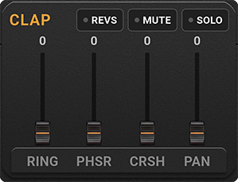
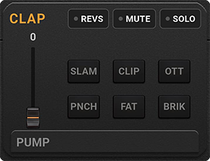

BeatStakk: The ultra-powerful pocket Groovebox to capture your inspiration...

🥁 The Purpose
BeatStakk was born from a simple idea: having a robust pocket beatmaker without compromising on sound quality. More than just a sample player, it's a true Sound Design tool equipped with a mixer and effects worthy of professional plugins.
Imagine the legendary workflow of an Akai MPC crossed with the philosophy of a Teenage Engineering PO-33, all boosted by a powerful DSP engine.
Small, elegant, and formidably effective, BeatStakk is designed for both professionals looking to capture a fleeting idea on tour, and passionate amateurs. Its great stability makes it a reliable instrument for Live performances, or an ideal demo tool before a studio session thanks to its multitrack export options. Furthermore, it fosters community through its ultra-light proprietary format, allowing you to share your compositions with other beatmakers in one click.
🏗️ Architecture and Technical Choices
Under the hood, the fluid interface developed in Flutter drives a true computational monster.
- C++ Audio Engine (Oboe): The digital signal processing (DSP) is coded in native C++. Massive polyphony, zero-latency SVF (State Variable Filters), peak limiters, and anti-click safety features.
- Open Kit Format (
.beatstakk): You are not limited to factory sounds. The application loads external kits on the fly. A creation tool (a provided.batscript) allows any user to build their own kit in seconds from their audio files. - Ultra-Light Project Format (
.bbx- BeatStakk Box): Your compositions (sequences, 12-filter settings per pad, tempo) are saved in this proprietary JSON format. It weighs a few kilobytes, making it instantly shareable via email, messaging apps, or Google Drive. - Studio Export (
.wav): The C++ engine allows rendering your loops into high-quality, uncompressed WAV audio files. Whether it's the master mix or track by track.
📖 Official Tutorial
Let's discover the interface step by step, from the left to the right of the main screen.
1. Startup and Playback (Play/Power)

Upon launching the application, sounds are not yet loaded into RAM to save your battery.
- Press the power button. The C++ engine will extract the sounds and prepare them.
- The button then transforms into a Play/Stop button.
- At this stage, you can already tap on the pads to hear the raw, unprocessed samples.
2. Loading Kits

Just to the right, a dropdown menu allows you to browse through the Kits. By default, 3 factory Kits are available.
When you change a Kit, BeatStakk is smart and asks you a crucial question via a dialog box:

- [ KEEP ]: Keeps your rhythm (patterns) and effects, and just replaces the instruments. Perfect for testing your groove with new sounds!
- [ RESET ]: Resets the application to zero (empty patterns, reset effects) to start with a blank slate.
(Don't forget to press the Power button again to load the new kit into memory!)
3. Tempo (BPM)

The BPM box shows you the tempo of your loop. Tap the number to bring up the numeric keypad and set a new speed (between 60 and 240 BPM).
4. Importing your own Kits (.beatstakk)

The red music icon allows you to import external sound banks.
How to create a kit for the community?
- Gather 8
.wavfiles in a folder. - Drop the free tool
BeatStakk_Kit_Maker.batavailable here and on Google Drive into it. - Run the
.bat. It will ask for the name of the kit and your pads, then automatically generate a.beatstakkfile ready to be imported into the app!
5. Audio Export (WAV)

The waves icon allows you to export your current loop into audio.
- Full Mix: Press directly to generate the master loop.
- Multitap (Stems): If you activate the SOLO mode on a specific pad before exporting, BeatStakk will only export the audio of that pad with its effects (Delay, trailing Reverb included). Ideal for recreating the track channel by channel in a PC/Mac sequencer (Ableton, FL Studio).
6. Managing Projects (.bbx)

- Down Arrow (Blue): Allows you to load an existing
.bbxproject from your phone. The app will automatically adjust the BPM, effects, and load the corresponding kit. - Up Arrow (Green): Saves your current state by creating a
.bbxfile. You will be prompted to name your composition. - Files can be saved on the phone, on your Drive, or shared directly via messaging apps.
7. Filters and Sound Design

Each pad has its own sound design channel strip. You can navigate between 5 control pages by discreetly tapping at the very bottom of the fader area.
PAGE 1: The Essentials
- VOL: Volume (can go up to 200% to compensate for filter gain loss).
- FLNG: Adds metallic coloration and saturation (Flanger/Distortion).
- PTCH (Pitch): Speeds up or slows down the sample (Vinyl Varispeed style).
- RES (Resonance): Classic resonant filter to give a "Laser" feel to the sound.
PAGE 2: Space
- DELY (Delay): Creates a rhythmic echo.
- CHRS (Chorus): Widens the sound by duplicating it.
- OVRD (Overdrive): Warm saturation (Tape Saturation) with auto-makeup gain.
- FORM (Formant): Vocal-type filter that gives a human voice (A-E-I-O-U) to the sample.
PAGE 3: Sculpting (Envelopes and EQ)
- ATTK (Attack): Fades the sound in progressively.
- DECY (Decay): Shortens the sound to make it more percussive.
- HGPS (High-Pass): Cuts the lows to keep only the "click" or "brightness".
- LWPS (Low-Pass): Muffles the sound ("underwater" effect). Filters are secured by a natural anti-click crossfade.
PAGE 4: Mutilation & Modulation

- RING (Ring Modulator): Multiplies the signal to create dissonant, robotic, or metallic harmonics (ideal for sci-fi sound design).
- PHSR (Phaser): 4-stage all-pass filter generating deep phase cancellation (the famous "Spaceship" sweep effect).
- CRSH (Bitcrusher): Aggressively degrades the sample resolution for a heavily saturated old-school Lo-Fi render.
- PAN (Tremolo): Chops the signal volume cyclically. Pushed to the extreme, it transforms a continuous sound into a "helicopter" effect.
PAGE 5: Dynamics & Compression

- PUMP: Natural Sidechain effect that rhythmically "ducks" the volume to let the loop breathe.
- The Exclusive Compression Rack: Six destructive algorithms (only one active at a time) to pump up your samples:
- SLAM: Aggressive compression (massive ratio) to crush the sound and give it a block of maximum energy.
- CLIP: Saturated Hard Clipping that violently clips audio peaks.
- OTT: Upward compression pushed to the extreme to make reverb tails and silent details scream.
- PNCH (Punch): Dry Transient Shaper, perfect for making a kick's attack punch through the mix.
- FAT: Asymmetrical compression emulating an analog tube pushed to saturation to thicken the low end.
- BRIK (Brickwall): Pure limiter driven by massive input gain for a perfectly flat and monolithic result.
Performance Controls (Toggles)
- REVS: Plays the sample backwards (Reverse).
- MUTE: Mutes the pad's sound.
- SOLO: Mutes all other pads.
(Tip: These buttons are perfect for structuring your track during a Live performance!)
8. Pads and Sequencer

- The 8 Pads trigger manual playback (Finger Drumming). Touching a pad also selects its track.
- At the bottom, the 16 sequencer steps (Patterns) allow you to program the selected pad's loop. The lights turn on as the playhead passes.
🎛️ A Classic Composition Flow
- Choose your color: Load a Kit.
- Design: Tap the Snare pad. Lower the Decay to make it drier, add a slight Pitch and some Overdrive to make it snap.
- Groove: Draw your notes on the 16 sequencer steps.
- Performance: Press Play. While listening to the loop play, tweak the Hi-hat's Low-Pass live to create Build-ups. Play with the Mute buttons to drop the bass, then bring it all back at once (Drop).
- Save: Save your project, or export the WAV file for your friends.
🎧 Practical Example
Try it yourself!
- Download the Jungle Kit: [Drive link to the .beatstakk kit]
- Download this Demo Project: [Drive link to the .bbx project]
- Import both into the application, press Play, and watch how the filters transcend the raw sounds!
- Load DRUMSHARD and choose KEEP. Experiment with your patterns directly with another kit.
This hybrid workflow, between immediate playing and surgical design, is what makes BeatStakk unique and incredibly addictive.
⚖️ Legal Disclaimer
The BeatStakk application is provided as a virtual hardware tool.
The provided factory kits respect copyrights, but Joyxt Corp is in no way responsible for the audio files (samples) that users import, use, or distribute via the .beatstakk format.
Make sure you own the rights or authorization (Royalty-Free) for the samples you use if you plan to commercialize your exported audio tracks. Piracy of copyrighted works is the sole responsibility of the end user.